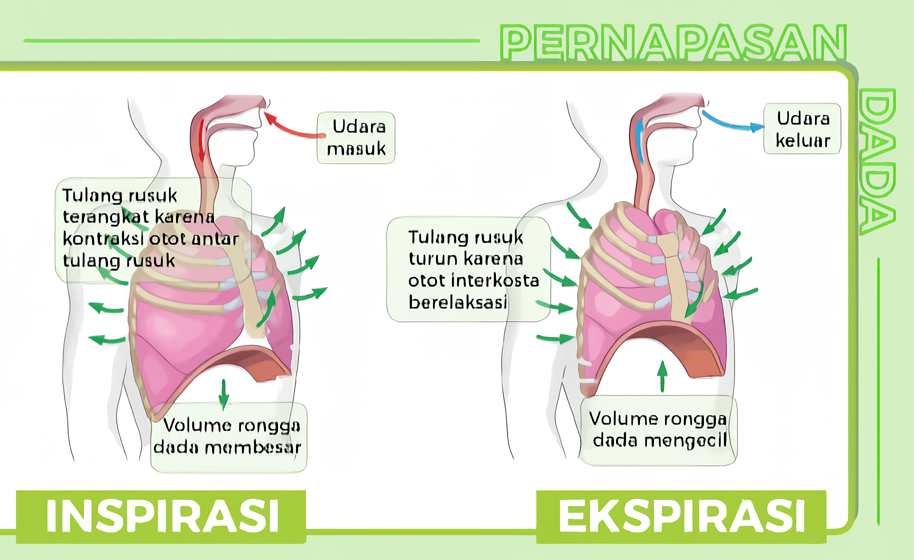

Proses Pernapasan
Proses pemapasan meliputi proses pengambilan udara dari luar tubuh (inspirasi) dan proses pengeluaran udara dari dalam tubuh (ekspirasi). Proses tersebut berlangsung sebanyak 15-18 kali per menit. Proses ekspirasi berlangsung karena kegiatan otot-otot diafragma dan otot-otot antartulang rusuk (interkostalis). Kerja otot-otot tersebutlah yang dapat mengatur volume ruang dada, memperbesar atau memperkecil sesuai dengan kehendak kita.
Proses pernapasan dibedakan menjadi dua berdasarkan otot-otot yang berkontraksi, yaitu pernapasan dada dan pernapasan perut.

Pernapasan Dada
Ekspirasi terjadi bukan saja akibat mengendornya otot-otot antar tulang rusuk dan otot-otot diafragma, melainkan juga karena adanya otot-otot antagonis yang mengerut, misalnya otot-otot antar rusuk lainnya maupun otot dinding perut. Tersedak dan bersin merupakan ekspirasi yang mendadak oleh pengerutan secara tiba-tiba dari otot-otot perut, sehingga isi perut mendorong diafragma ke atas.
Akibatnya, rongga dada mengecil secara tiba-tiba, sehingga tekanan di dalam paru-paru menjadi tinggi dan udara keluar dengan keras dari paru-paru. Mekanisme tersedak dan bersin merupakan usaha tubuh (sistem pernapasan) untuk mengeluarkan benda asing dalam saluran pernapasan.
Proses pernapasan dibedakan menjadi dua berdasarkan otot-otot yang berkontraksi, yaitu pernapasan dada dan pernapasan perut.
Pernapasan dada dimulai dengan berkontraksinya otot-otot antartulang rusuk yang menyebabkan tulang-tulang rusuk terangkat dan rongga dada membesar. Membesarnya rongga dada tersebut menyebabkan tekanan udara di dalam paru-paru menurun, sehingga udara di luar masuk ke paru- paru (inspirasi), Apabila otot-otot antartulang rusuk berelaksasi, tulang-tulang rusuk menurun sehingga volume rongga dada mengecil. Akibatnya tekanan udara dalam paru-paru naik dan udara keluar dari paru-paru (ekspirasi).
Ekspirasi terjadi bukan saja akibat mengendornya otot-otot antar tulang rusuk dan otot-otot diafragma, melainkan juga karena adanya otot-otot antagonis yang mengerut, misalnya otot-otot antar rusuk lainnya maupun otot dinding perut. Tersedak dan bersin merupakan ekspirasi yang mendadak oleh pengerutan secara tiba-tiba dari otot-otot perut, sehingga isi perut mendorong diafragma ke atas.
Akibatnya, rongga dada mengecil secara tiba-tiba, sehingga tekanan di dalam paru-paru menjadi tinggi dan udara keluar dengan keras dari paru-paru. Mekanisme tersedak dan bersin merupakan usaha tubuh (sistem pernapasan) untuk mengeluarkan benda asing dalam saluran pernapasan.

Mari Mengamati
Amatilah video berikut ini dengan seksama.
Video 2. Proses Pernapasan Manusia
Video 2. Proses Pernapasan Manusia
Kesimpulan
Pada dasarnya, proses pernapasan dimulai saat udara masuk ke dalam tubuh melalui mulut atau hidung. Udara masuk ke faring, di mana udara dan makanan saling berpencar. Setelah itu, udara melewati laring, trakea, bronkus, dan akhirnya mencapai paru-paru. Di sana, oksigen dari udara masuk ke dalam darah melalui alveolus, kemudian diangkut ke seluruh tubuh oleh pembuluh darah.
Oksigen yang kita tarik dari udara diperlukan oleh otak untuk mengendalikan seluruh tubuh. Setelah digunakan, darah kembali ke jantung dan dipompa ke paru-paru untuk mendapatkan oksigen lagi. Proses ini terus berulang untuk menjaga tubuh tetap berfungsi dengan baik.